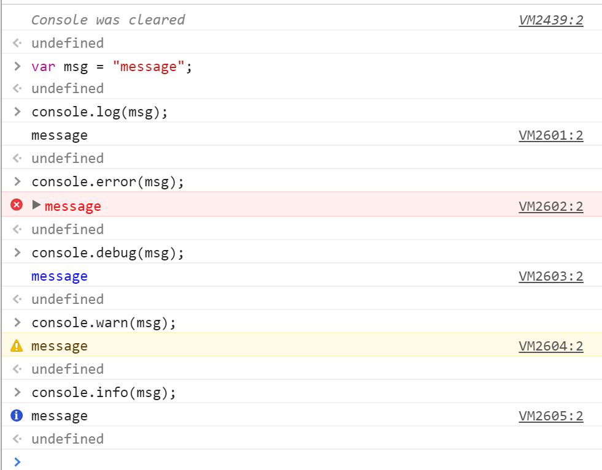
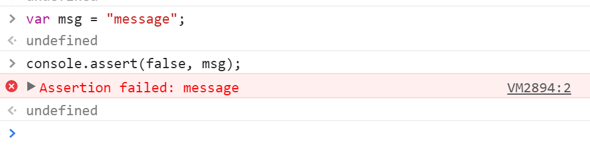
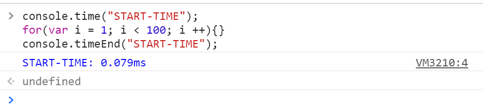
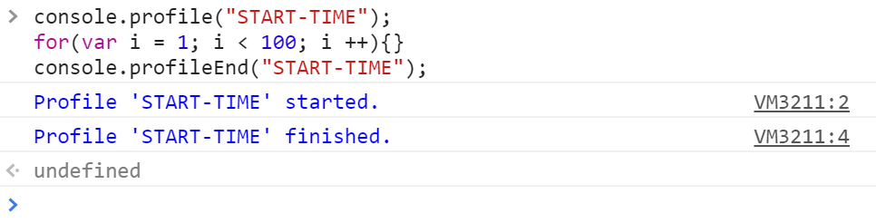

前端那些事儿 - Console 对象
我们在日常的 Web 前端开发中经常会遇到需要进行 JavaScript（后面简称 JS）代码调试的需求，大#部分的 JS 初学者可能会选择使用 alert() 方法来打印变量或者对象本身的值来进行调试，但这样却并不能看到对象的具体内容。
各大浏览器厂商为了便于开发者进行调试，在各个浏览器内核中引入了 Console 对象以便于进行 JS 代码的调试。Console 对象并不是标准的 Javascript 内置对象，所以各个浏览器对 Console 对象支持的方法细节各不相同。我们这里会介绍几个常用的 Console 对象方法，这些方法可以大大简化或者方便开发者对于大量复杂 JS 代码的调试流程。
- Console.log()：
Console.log() 方法可以用来打印变量或者对象的内容。对于对象类型，Console.log() 方法会打印出整个对象的结构甚至 Prototype 原型链上的内容，所有的 Console 对象其方法均不会阻塞 JS 代码的正常执行流程，调试和运行状态分离。你甚至可以在任何时候在浏览器的 Console 控制台窗口内调用 Console 对象的该方法来打印所有可以引用的全局变量和对象。
- Console.error() / Console.debug() / Console.info() / Console.warn()：
Console 对象的这四个方法和 Console.log() 的用法和效果基本一样，只不过其在浏览器 Console 控制台内输出的文字颜色和形式会略有不同，如下图所示。

- Console.assert(expression[, object, …])：
Console.assert() 十分类似单元测试里的断言，当 expression 返回为 false 时会在 Console 中打印第二个参数（对象，变量，值均可）的值，如下图所示。

- Console.clear()：
Console.clear() 方法会清空浏览器 Console 控制台内的所有信息。
- Console.time(name) / Console.timeEnd(name)：
Console.time() 和 Console.timeEnd() 方法需要配合使用来获取一段 JS 代码的实际运行时间，示例如下。

- Console.profile(name) / Console.profileEnd(name)：
Console.profile() 和 Console.profileEnd() 方法需要配合使用来获取一段 JS 代码的运行时详细情况，浏览器会调用分析器来分析 JS 代码的运行情况，示例如下。

- Console.count([title])：
Console.count() 用于统计当前代码段被执行过的次数。